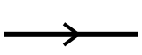
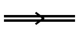
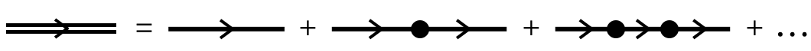

5.2.2 Dyson Series#
Prompts
Why is the Volterra integral form often a better starting point than the differential equation for \(\hat{U}_{\mathcal{I}}(t)\), and what does it make conceptually clear about perturbative iteration?
How does repeated substitution of the Volterra equation generate the Dyson series order by order, and what physical process is represented by each order in \(\hat{V}_{\mathcal{I}}\)?
What is the bare Green’s function \(\hat{G}_0(t,t')\), and why is it a natural language for describing free propagation segments between interaction events?
How does the dressed Green’s function \(\hat{G}(t,t_0)\) encode the same propagate-scatter history as the Dyson series, and why does time ordering appear in the integration domain?
How do Feynman-diagram elements (free line, vertex, dressed line) map to operator factors in the Dyson expansion, and why must diagram reading order mirror operator multiplication on states?
Lecture Notes#
Overview#
Section 5.2.1 established the interaction-picture equation
and the factorization \(\hat{U}(t)=\hat{U}_0(t)\hat{U}_{\mathcal{I}}(t)\). The central task of this section is to solve for \(\hat{U}_{\mathcal{I}}\) perturbatively when operators at different times do not commute. The result is the Dyson series: a time-ordered expansion that can be truncated order by order.
After constructing the Dyson expansion, we rewrite the same physics in two equivalent languages. The Green’s-function form makes each term read as “free propagation interrupted by scattering,” and the diagrammatic form turns that same structure into compact Feynman rules. By the end, we have a practical formula for \(\hat{U}(t)=\hat{G}(t,0)\) to any desired order in \(\hat{V}\), which serves as the technical input for the next section’s concrete transition calculations.
Dyson Series#
Integrate Eq. (188) from \(0\) to \(t\) and use \(\hat{U}_{\mathcal{I}}(0)=\hat{I}\):
This is the Volterra integral equation for \(\hat{U}_{\mathcal{I}}\), equivalent to the differential operator EOM but better suited for iteration: the unknown \(\hat{U}_{\mathcal{I}}\) appears under the integral, so substituting Eq. (189) into itself reduces it to a quantity multiplied by one extra factor of \(\hat{V}_{\mathcal{I}}\).
Derivation: from operator EOM to Volterra equation
Integrate both sides of Eq. (188):
Use \(\hat{U}_{\mathcal{I}}(0)=\hat{I}\) and divide by \(\mathrm{i}\hbar\) to obtain Eq. (189).
Iteration (blackboard style). Perform one explicit substitution under the integral:
Expand once:
The pattern is now visible: each substitution adds one ordered time integral and one extra \(\hat V_{\mathcal I}\). Continuing to all orders gives the Dyson series:
where the \(k=0\) term is \(\hat{I}\). The integration domain \(0\le t_1\le t_2\le\cdots\le t_k\le t\) enforces time ordering: in each operator product, later times sit to the left and earlier times to the right.
Why the time ordering matters
If \([\hat{V}_{\mathcal{I}}(t_1),\hat{V}_{\mathcal{I}}(t_2)]\neq 0\), the order in which interactions act is physical, and the simplex \(0\le t_1\le\cdots\le t_k\le t\) — not the full hypercube — is what reproduces causal composition. The compact notation
with \(\mathcal{T}\) the time-ordering operator is shorthand for exactly Eq. (190).
What each order means physically
\(k=0\): no interaction (\(\hat{U}_{\mathcal{I}}=\hat{I}\)).
\(k=1\): one interaction event in \((0,t)\) — first-order amplitudes.
\(k=2\): two events in time-ordered sequence; different intermediate histories interfere.
General \(k\): a time-ordered “film” of \(k\) scatters.
Green’s Function#
The Dyson series Eq. (190) is written in terms of \(\hat{V}_{\mathcal{I}}=\hat{U}_0^{\dagger}\hat{V}\hat{U}_0\). Each adjacent product
contains a free-evolution sandwich whose only role is to propagate the system from \(t_j\) to \(t_{j+1}\) between two scatterings. This motivates an independent name for that object.
Bare propagator (bare Green’s function)
It is the unitary propagator of the unperturbed system from time \(t'\) to time \(t\). Composition is automatic: \(\hat{G}_0(t,t'')\hat{G}_0(t'',t')=\hat{G}_0(t,t')\).
Derivation: from \(\hat V_{\mathcal I}\) strings to \(\hat G_0\) links
Use three direct steps.
Expand each interaction-picture vertex:
In a product, every adjacent pair produces a free propagator:
So the ordered string becomes
Multiply by \(\hat U_0(t)\) from the left (\(\hat U=\hat U_0\hat U_{\mathcal I}\)) and use \(\hat U_0(t)\hat U_0^{\dagger}(t_k)=\hat G_0(t,t_k)\), \(\hat U_0(t_1)=\hat G_0(t_1,0)\) (\(\hat U_0(0)=\hat I\)), yielding Eq. (192).
This is exactly the propagate-scatter-propagate chain.
The Schrödinger-picture propagator \(\hat{U}(t)=\hat{U}_0(t)\hat{U}_{\mathcal{I}}(t)\) inherits the same expansion structure but with \(\hat{G}_0\) links between \(\hat{V}\) vertices:
Each term reads, left to right, as free propagation \(\to\) scatter at \(\hat{V}(t_k)\) \(\to\) free propagation \(\to\) scatter at \(\hat{V}(t_{k-1})\) \(\to\cdots\to\) free propagation back to time \(0\).
Dressed propagator (dressed Green’s function)
Generalize the initial time from \(0\) to \(t_0\) and define
It is the full propagator from \(t_0\) to \(t\) in the presence of \(\hat{V}\). The same expansion now reads
— the Dyson series for the Green’s function. Since \(\hat{U}(t)=\hat{G}(t,0)\), computing \(\hat{G}\) in powers of \(\hat{V}\) is computing \(\hat{U}\) in powers of \(\hat{V}\).
Recursive form
Eq. (194) is equivalent to the closed recursive equation
obtained by separating off the latest interaction vertex. Solving this recursion order by order in \(\hat{V}\) regenerates Eq. (194).
Goal achieved. Given \(\hat{G}_0\) (which we know explicitly in the eigenbasis of \(\hat{H}_0\)), Eq. (194) lets us compute \(\hat{G}(t,t_0)\) — and therefore any transition amplitude \(\langle f\vert\hat{G}(t,t_0)\vert i\rangle\) — order by order in the perturbation.
Feynman Diagrams#
The expansion Eq. (194) is algebraically long but structurally simple: free propagation, vertex, free propagation, vertex, … Diagram rules compress this bookkeeping without changing physics.
Feynman rules
Element |
Symbol |
Meaning |
|---|---|---|
directed single line \(t'\to t\) |
 |
\(\hat{G}_0(t,t')\) — bare propagation |
solid dot at time \(t\) |
\(-\dfrac{\mathrm{i}}{\hbar}\hat{V}(t)\) — one scattering event |
|
directed double line \(t_0\to t\) |
 |
\(\hat{G}(t,t_0)\) — dressed propagation |
Connecting links and dots identifies the time labels. Outermost times (initial \(t_0\), final \(t\)) are fixed; internal times are integrated over the time-ordered domain.
Mirror rule (diagram vs operator order)
Time flows along the arrow on the page (past on the left, future on the right). But operators in \(\hat{G}(t,t_0)\) act on a ket from the right, so the operator product reads right-to-left. Diagram and operator are mirror images of each other.
The Dyson series Eq. (194) becomes, schematically,
{kind=link}

a dressed propagator built from sums of all diagrams with arbitrarily many internal \(\hat{V}\) vertices.
Limit \(\hat{V}\to 0\) as a sanity check
When the perturbation is switched off, every diagram with at least one dot vanishes, and \(\hat{G}(t,t_0)\to\hat{G}_0(t,t_0)\) — the system propagates freely. The diagrams literally show how nontrivial dynamics is dressed onto free propagation by repeated scattering.
Discussion: what diagrams are not
Feynman diagrams here are bookkeeping for an explicit operator series — they do not introduce new physics on top of Eq. (194). (In quantum field theory, similar diagrams gain extra content from second quantization and from how internal lines propagate; that step is beyond the scope of this section.)
Summary#
Dyson series: iterating the Volterra equation Eq. (189) produces \(\hat{U}_{\mathcal{I}}\) as a time-ordered power series in \(\hat{V}_{\mathcal{I}}\) (Eq. (190)).
Green’s functions: the bare propagator \(\hat{G}_0\) (Eq. (191)) and the dressed propagator \(\hat{G}=\hat{U}\hat{U}^{\dagger}\) rewrite the same series as “free \(\to\) scatter \(\to\) free \(\to\cdots\)” (Eq. (194)).
Feynman diagrams: one rule per ingredient — single line \(\hat{G}_0\), dot \(-\mathrm{i}\hat{V}/\hbar\), double line \(\hat{G}\) — visualize Eq. (194) order by order; the mirror rule converts diagram order into operator order.
Output: \(\hat{U}(t)=\hat{G}(t,0)\) to any desired order in \(\hat{V}\) — the input used in 5.2.3 to compute transition probabilities.
See Also
5.2.1 Interaction Picture: definitions of \(\hat{V}_{\mathcal{I}}\), \(\hat{U}_{\mathcal{I}}\), and the operator EOM that this section integrates.
5.2.3 Applications: first-order transition amplitudes, Fermi’s golden rule, adiabatic process, and the Kubo formula — all built on Eq. (194).
5.1.2 Non-Degenerate Perturbation Theory: the static counterpart, where the same kind of expansion is organized around energy denominators.
Homework#
1. Volterra integral form. Verify directly that the Volterra integral equation Eq. (189) for \(\hat{U}_{\mathcal{I}}(t)\) is equivalent to the IP operator EOM Eq. (188) together with the initial condition \(\hat{U}_{\mathcal{I}}(0)=\hat{I}\), by differentiating both sides.
2. Iteration to second order. Substitute Eq. (189) for \(\hat{U}_{\mathcal{I}}(t')\) on its own right-hand side once, and verify the \(k=2\) term of the Dyson series Eq. (190). Pay attention to the ordering of the two integration variables and the signs.
3. Time-ordering identity. For an integrand symmetric in \((t_1,t_2)\), show that
Use this to rewrite the \(k=2\) Dyson term with the time-ordering operator \(\mathcal{T}\) as
and explain why the \(1/k!\) from the Taylor expansion of \(\mathcal{T}\exp\) matches the simplex factor from time ordering.
4. Bare Green’s function. From Eq. (191),
(a) Show \(\hat{G}_0(t,t'')\hat{G}_0(t'',t')=\hat{G}_0(t,t')\) using the spectral form.
(b) Show \(\hat{G}_0(t,t')^{\dagger}=\hat{G}_0(t',t)\), i.e. \(\hat{G}_0\) is unitary.
(c) Compute the matrix element \(\langle m\vert\hat{G}_0(t,t')\vert n\rangle\) and identify the Bohr phase.
5. Schrödinger-picture Dyson series. Starting from \(\hat{U}(t)=\hat{U}_0(t)\hat{U}_{\mathcal{I}}(t)\) and the second-order term of Eq. (190), derive the second-order term of Eq. (192) explicitly. Show step by step where each \(\hat{G}_0\) link comes from.
6. Recursive Dyson equation. Show that Eq. (194) is equivalent to the closed recursion
Iterate this recursion once and verify the \(k=1\) and \(k=2\) terms of Eq. (194).
7. Two-level Feynman diagrams. Take
with \(\hat{V}\) time-independent.
(a) Write the second-order amplitude \(\langle 1\vert\hat{U}(t)\vert 0\rangle\) from Eq. (192).
(b) Identify which intermediate states contribute and draw the corresponding Feynman diagram.
(c) Argue physically why this term is not the dominant contribution to \(\vert 0\rangle\to\vert 1\rangle\) at small \(\Omega t\) (compare with the first-order amplitude).
8. Three-level virtual transition. Let \(\hat{H}_0=\Delta\vert 3\rangle\langle 3\vert\) with \(E_1=E_2=0\) and \(E_3=\Delta\). Take a perturbation that connects \(\vert 1\rangle\leftrightarrow\vert 3\rangle\leftrightarrow\vert 2\rangle\) but has no direct \(\vert 1\rangle\leftrightarrow\vert 2\rangle\) matrix element:
(a) Write down \(\hat{G}_0(t,t')\) explicitly using the spectral form.
(b) Argue from the Dyson series Eq. (194) that the leading nonzero contribution to \(\langle 2\vert\hat{G}(t,0)\vert 1\rangle\) is second order in \(\lambda_0\), and identify which Feynman diagram it corresponds to.
(c) Write the second-order amplitude explicitly as a double time integral; you do not need to evaluate the integral here (that comes in 5.2.3 once we know how to handle long-time limits).